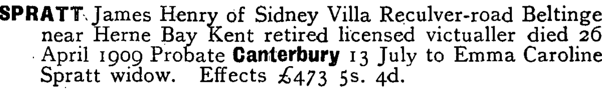
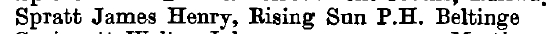
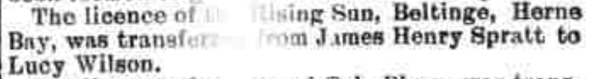
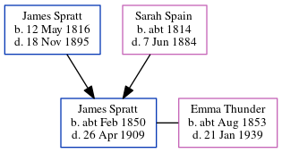

James Henry Spratt cFeb 1850 - 1909
[ Home ] | [ Calendar ] | [ Surnames Index ] | [ Errors ] | [ Family History ]The child of James Spratt and Sarah Spain, James Spratt, the great-great-uncle of Nigel Horne, was born in St Nicholas-at-Wade, Kent, England c. Feb 18501,2,3,4 and baptised there on 17 Feb 1850. He married Emma Thunder (a publican) at St Martin, Kentish Town, London, England on 1 Jan 18856. Like his father, he was an agricultural labourer.
During his life, he was living at Crump's Farm in St Nicholas-at-Wade on 30 Mar 18511; at his birthplace in 18612; at Rising Sun, 103 Reculver Road, Beltinge, Kent, England on 5 Apr 18918, on 31 Mar 19019, in 1902 and in 1903; and at Sidney Villa, Reculver Road in Beltinge in 1909.
He died on 26 Apr 1909 in Blean, Kent, England5.
Parents
- James was born on 12 May 1816
- Sarah was born c. 1814
Citations
- 1851 England Census Online publication - Provo, UT, USA: The Generations Network, Inc., 2005.Original data - Census Returns of England and Wales, 1851. Kew, Surrey, England: The National Archives of the UK (TNA): Public Record Office (PRO), 1851. Data imaged from the National
- 1861 England Census Online publication - Provo, UT, USA: The Generations Network, Inc., 2005.Original data - Census Returns of England and Wales, 1861. Kew, Surrey, England: The National Archives of the UK (TNA): Public Record Office (PRO), 1861. Data imaged from the National
- England & Wales births 1837-2006 - Findmypast
- England & Wales, FreeBMD Birth Index, 1837-1915 Online publication - Provo, UT, USA: The Generations Network, Inc., 2006.Original data - General Register Office. England and Wales Civil Registration Indexes. London, England: General Register Office. © Crown copyright. Published by permission of the Cont
- England & Wales deaths 1837-2007 - Findmypast
- England & Wales Marriages 1837-2005 - Findmypast
- 1851 England, Wales & Scotland Census - Findmypast (was age 1 and the son of the head of the household)
- 1891 England, Wales & Scotland Census - Findmypast (was age 40 and the head of the household)
- 1901 England, Wales & Scotland Census - Findmypast (was age 51 and the head of the household)
Media
James Henry Spratt - probate

Kelly's Directory of Kent - 1903

Whitstable Times and Herne Bay Herald - 20 Sep 1902

Kentish Times and Farmers' Gazette February 11, 1905

1891 England, Wales & Scotland Census Transcription - GBC-1891-0005762864
England & Wales marriages 1837-2008 - BMD/M/1885/1/AZ/000216/128
England & Wales deaths 1837-2007 - BMD/D/1909/2/AZ/000318/159
England & Wales births 1837-2006 - BMD/B/1850/1/IS/001438/015
1901 England, Wales & Scotland Census - GBC-1901-0006243968
England Births & Baptisms 1538-1975 - R_884660025
Kent Baptisms - GBPRS/CANT/B/96801531
Family Tree
Map
Generated by ged2site. Last updated on Jul 3, 2024
Known Issues
Residence record for 1909 contains no citation
Residence record for 1903 contains no citation
Residence record for 1902 contains no citation
Location for 7 Apr 1861 (St Nicholas-at-Wade, Kent, England) differs from mother's (The Row, St Nicholas-at-Wade, Kent, England)
Date of residence (1861) differs from mother's in same year (7 Apr 1861)
1861: Not living with either parent in childhood when aged 11